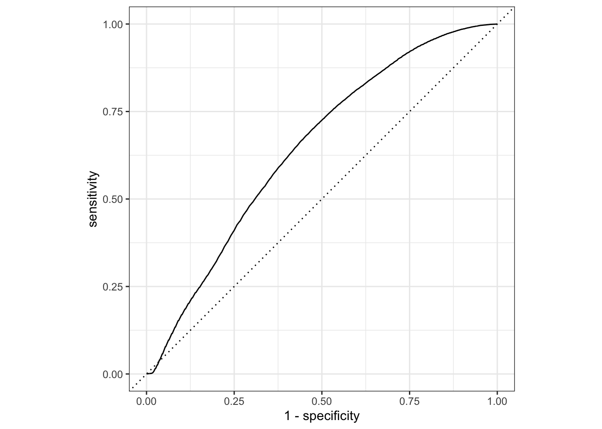

library(tidymodels)
# remotes::install_github("pabsantos/roadtrafficdeaths")
library(roadtrafficdeaths)Treinamento ML
Introdução
O objetivo desse exemplo é aplicar um modelo de regressão logística binária, buscando prever em cada declaração de óbito se a vítima é um ocupante de motocicleta ou não. A modelagem é aplicada com a utilização do framework {tidymodels}, que reúne vários pacotes que auxiliam na criação de um modelo de machine learning.
O foco desse documento não é explicar a parte conceitual e teórica de modelos de regressão logística e modelos de machine learning. Aqui vai ser descrito o passo a passo da aplicação de um modelo, com uso das funções do {tidymodels}.
Os dados utilizados nesse exemplo são as declarações de óbitos entre 1996 e 2022 do Sistema de Informação de Mortalidade, disponibilizados pelo DATASUS. O pacote {roadtrafficdeaths} contém o dataset dessa fonte, considerando apenas os óbitos ocorridos em sinistros de trânsito.
Dados
Ao carregar o pacote {roadtrafficdeaths} o dataset rtdeaths é automaticamente inserido no escopo global do projeto. Com a função str() é possível observar a estrutura da tabela, com as suas variáveis. Para entender melhor cada variável do dataset, é possível inserir o comando ?rtdeaths no console, retornando uma documentação do pacote {roadtrafficdeaths}
str(rtdeaths)'data.frame': 970862 obs. of 21 variables:
$ cid : chr "V093" "V893" "V499" "V280" ...
$ cod_modal_vitima : chr "V0" "V8" "V4" "V2" ...
$ modal_vitima : chr "Pedestre" "Outros" "Automóvel" "Motocicleta" ...
$ cod_modal_outro : chr "9" "9" "9" "8" ...
$ modal_outro : chr "Não especificado" "Não especificado" "Não especificado" "Sem colisão" ...
$ data_ocorrencia : Date, format: "2001-02-11" "2006-09-30" ...
$ ano_ocorrencia : num 2001 2006 2018 2020 2012 ...
$ idade_vitima : num 9 33 33 40 84 6 66 47 0 36 ...
$ faixa_etaria_vitima: Factor w/ 17 levels "0 a 4 anos","5 a 9 anos",..: 2 7 7 9 17 2 14 10 1 8 ...
$ sexo_vitima : chr "Masculino" "Masculino" "Feminino" "Masculino" ...
$ escolaridade_vitima: chr "de 1 a 3 anos" "de 8 a 11 anos" "de 8 a 11 anos" "de 1 a 3 anos" ...
$ raca_vitima : chr "Parda" "Parda" "Parda" "Parda" ...
$ ocup_cbo_vitima : chr "00600" "313305" "524305" NA ...
$ cod_municipio_ocor : chr "150618" "150230" "150420" "150270" ...
$ nome_regiao_ocor : chr "Norte" "Norte" "Norte" "Norte" ...
$ cod_municipio_res : chr "150618" "150230" "150420" "150270" ...
$ nome_regiao_res : chr "Norte" "Norte" "Norte" "Norte" ...
$ nome_uf_ocor : chr "Pará" "Pará" "Pará" "Pará" ...
$ nome_municipio_ocor: chr "Rondon do Pará" "Capitão Poço" "Marabá" "Conceição do Araguaia" ...
$ nome_uf_res : chr "Pará" "Pará" "Pará" "Pará" ...
$ nome_municipio_res : chr "Rondon do Pará" "Capitão Poço" "Marabá" "Conceição do Araguaia" ...Criação da variável dependente
A variável dependente (ou resposta) do modelo é saber se a vítima era ocupante do motocicleta ou não. Para isso, é necessário criar uma variável binária (dois resultados: motociclista ou não-motociclista) com base na variável existente modal_vitima. Primeiro, observa-se os valores únicos de modal_vitima
unique(rtdeaths$modal_vitima)[1] "Pedestre" "Outros" "Automóvel" "Motocicleta" "Caminhão"
[6] "Ônibus" "Bicicleta" "Triciclo" A variável resposta vai considerar apenas a classe “Motociclista”. Com auxílio do ifelse() foi possível criar essa nova variável. O table() retorna a quantidade de respostas em cada nível.
Outro passo importante é transformar a variável em um factor, utilizando a função as.factor. Isso faz com que a variável que já está em texto seja identificada como classes na hora de aplicar o modelo.
Warning
Ao criar o factor, utilizou-se como nível de referência o não-ocupante de motocicleta (ref = "nao_ocupante"). Isso é importante pois o modelo que será utilizado posteriormente - o glm - mede a probabilidade de rejeitar a hipótese nula em prol da hipótese alternativa de que o evento ocorra. Assim, o modelo entende que a classe de referência é a “não-ocorrência”, e a probabilidade que ele quer medir é a “ocorrência”.
rtdeaths$ocupante_motocicleta <- ifelse(
rtdeaths$modal_vitima == "Motocicleta",
"ocupante",
"nao_ocupante"
)
rtdeaths$ocupante_motocicleta <-
relevel(as.factor(rtdeaths$ocupante_motocicleta), ref = "nao_ocupante")
table(rtdeaths$ocupante_motocicleta)
nao_ocupante ocupante
754518 216344 Seleção de variáveis
Com a variável dependente criada, o próximo passo é selecionar apenas as variáveis que serão utilizadas no modelo. Nesse exemplo as variáveis preditoras serão a idade da vítima, o sexo e a raça. Com a função subset() é possível selecionar as colunas necessárias.
vars <- c("ocupante_motocicleta", "idade_vitima", "sexo_vitima", "raca_vitima")
model_data <- subset(rtdeaths, select = vars)
str(model_data)'data.frame': 970862 obs. of 4 variables:
$ ocupante_motocicleta: Factor w/ 2 levels "nao_ocupante",..: 1 1 1 2 1 1 1 1 1 1 ...
$ idade_vitima : num 9 33 33 40 84 6 66 47 0 36 ...
$ sexo_vitima : chr "Masculino" "Masculino" "Feminino" "Masculino" ...
$ raca_vitima : chr "Parda" "Parda" "Parda" "Parda" ...Valores inválidos / vazios
Por fim, é uma boa prática observar a quantidade de valores vazios (NA) na tabela de dados, e removê-los caso necessário. Valores NA na entrada do modelo podem prejudicar a sua qualidade. Também existe a possibilidade de inputar novos valores com técnicas de amostragem sintética, como o bootstraping.
A função is.na() filtra os valores que são vazios, retornando TRUE caso sejam. Com o sum() é possível essa quantidade de TRUE, assim contabilizando a quantidade de linhas com a presença de algum dado NA.
is.na(model_data) |> sum()[1] 112891A quantidade de linhas vazias retornou 112891. É uma quantidade grande, mas como a amostra restante também é grande, optou-se por remover essas linhas, com o uso da função na.omit(). Alguns consideram essa remoção como uma prática não recomendada, pois pode se estar perdendo informação valiosa da amostra.
model_data_valido <- na.omit(model_data)
str(model_data_valido)'data.frame': 860980 obs. of 4 variables:
$ ocupante_motocicleta: Factor w/ 2 levels "nao_ocupante",..: 1 1 1 2 1 1 1 1 2 1 ...
$ idade_vitima : num 9 33 33 40 66 47 0 36 19 17 ...
$ sexo_vitima : chr "Masculino" "Masculino" "Feminino" "Masculino" ...
$ raca_vitima : chr "Parda" "Parda" "Parda" "Parda" ...
- attr(*, "na.action")= 'omit' Named int [1:109882] 5 6 41 44 57 66 80 82 96 188 ...
..- attr(*, "names")= chr [1:109882] "5" "6" "41" "44" ...Modelagem
Com os dados de entrada prontos, inicia-se o processo de modelagem com auxílio do meta-pacote {tidymodels}.
Divisão dos dados
O próximo passo para iniciar a modelagem é dividir os dados em um conjunto de treino e outro de teste. O conjunto treino é utilizado para desenvolver e otimizar o modelo e em geral é o conjunto com a maior quantidade de dados. O conjunto teste serve para validar o modelo criado, possibilitando extrair parâmetros de desempenho ao comparar as respostas “reais” e as respostas previstas.
A função initial_split() faz essa repartição de forma automática. Aqui, selecionou-se uma repartição de 80% do volume de dados para o treino (prop = 0.80) e decidiu-se utilizar a repartição estratificada, com base nas classes da variável resposta (strata = ocupante_motocicleta). Isso é importante pois esse parâmetro tenta balancear as duas classes resposta no mesmo dataset (treino ou teste).
set.seed(1234)
data_split <-
initial_split(
model_data_valido,
prop = 0.80,
strata = ocupante_motocicleta
)
data_split<Training/Testing/Total>
<688783/172197/860980>Com o objeto data_split realizado, cria-se os datasets com training() e testing().
data_train <- training(data_split)
data_test <- testing(data_split)Recipe
Com os dados devidamente repartidos, o próximo passo é criar a receita do modelo, com a função recipe(). Aqui se escolhe a equação da regressão, os dados de entrada, e quais tratamentos são necessários aplicar nas variáveis, com o uso das funções step_...().
Como equação se tem ocupante_motocicleta ~ idade_vitima + sexo_vitima + raca_vitima e os dados de entrada são os dados de treino (data_train). step_relevel() é utilizado para selecionar qual o valor de referência nas variáveis independentes e step_dummy() é utilizado para transformar as variáveis categóricas em variáveis numéricas binárias (1 ou 0).
model_recipe <-
recipe(
ocupante_motocicleta ~ idade_vitima + sexo_vitima + raca_vitima,
data = data_train
) |>
step_relevel(sexo_vitima, ref_level = "Masculino") |>
step_relevel(raca_vitima, ref_level = "Preta") |>
step_dummy(all_nominal_predictors())
model_recipe── Recipe ──────────────────────────────────────────────────────────────────────── Inputs Number of variables by roleoutcome: 1
predictor: 3── Operations • Re-order factor level to ref_level for: sexo_vitima• Re-order factor level to ref_level for: raca_vitima• Dummy variables from: all_nominal_predictors()Com o uso do prep() e bake() é possível pre-processar esses passos a fim de observar como que ficam essas variáveis transformadas.
model_recipe |> prep() |> bake(new_data = NULL)# A tibble: 688,783 × 7
idade_vitima ocupante_motocicleta sexo_vitima_Feminino raca_vitima_Amarela
<dbl> <fct> <dbl> <dbl>
1 9 nao_ocupante 0 0
2 33 nao_ocupante 0 0
3 33 nao_ocupante 1 0
4 66 nao_ocupante 0 0
5 47 nao_ocupante 0 0
6 0 nao_ocupante 0 0
7 17 nao_ocupante 0 0
8 23 nao_ocupante 0 0
9 45 nao_ocupante 1 0
10 23 nao_ocupante 1 0
# ℹ 688,773 more rows
# ℹ 3 more variables: raca_vitima_Branca <dbl>, raca_vitima_Indígena <dbl>,
# raca_vitima_Parda <dbl>Model workflow
Com a receita do modelo pronta, o próximo passo é criar o objeto que controla o modelo em si. Como vai ser utilizada a regressão logística, o modelo inicia com essa definição: logistic_reg(). Em seguida, escolhe-se o motor do modelo com set_engine(). Aqui foi escolhido o glm, que é o modelo utilizado pelo próprio R base para criar regressões logísticas. Por fim, uma regressão logística pode ser utilizada para analisar valores numéricos ou categóricos. Neste caso, procura-se fazer o segundo. Assim, com o set_mode() é definido um modelo de classificação.
rl_model <- logistic_reg() |>
set_engine("glm") |>
set_mode("classification")
rl_modelLogistic Regression Model Specification (classification)
Computational engine: glm O último passo antes de rodar o modelo é criar o objeto de workflow, que controla o fluxo de trabalho do modelo. Com workflow() é possível unir o objeto que controla a receita (model_recipe) e o objeto que controla o modelo (rl_model).
model_wf <- workflow() |>
add_model(rl_model) |>
add_recipe(model_recipe)
model_wf══ Workflow ════════════════════════════════════════════════════════════════════
Preprocessor: Recipe
Model: logistic_reg()
── Preprocessor ────────────────────────────────────────────────────────────────
3 Recipe Steps
• step_relevel()
• step_relevel()
• step_dummy()
── Model ───────────────────────────────────────────────────────────────────────
Logistic Regression Model Specification (classification)
Computational engine: glm Regressões - Treinando o modelo
Agora é possível treinar o modelo com uso da função fit(), tendo como input o workflow do modelo e os dados de treino. Aplicando tidy() com o parâmetro exponentiate é possível ver os resultados dos coeficientes do modelo, transformando os coeficientes estimados que vêm originalmente em log para escala decimal.
lr_fit <- fit(model_wf, data_train)
fit_results <- tidy(lr_fit, exponentiate = TRUE)
fit_results# A tibble: 7 × 5
term estimate std.error statistic p.value
<chr> <dbl> <dbl> <dbl> <dbl>
1 (Intercept) 0.761 0.0142 -19.2 1.82e- 82
2 idade_vitima 0.977 0.000175 -133. 0
3 sexo_vitima_Feminino 0.466 0.00881 -86.5 0
4 raca_vitima_Amarela 0.497 0.0597 -11.7 1.07e- 31
5 raca_vitima_Branca 0.896 0.0135 -8.19 2.69e- 16
6 raca_vitima_Indígena 0.934 0.0624 -1.09 2.76e- 1
7 raca_vitima_Parda 1.33 0.0134 21.3 1.65e-100Com os resultados, observa-se que apenas raca_vitima_Indígena apresentou um p-valor acima de 0.05. Excluindo raca_vitima_Parda, todos os coeficientes apresentaram uma razão de chances abaixo de 1.
Predições - Testando o modelo
Com o modelo calculado, é possível fazer uma predição com os dados de teste. A função augment() faz isso, tendo como entrada o objeto do modelo calculado - lr_fit - e os dados de teste - data_test. Isso retorna um dataset com os resultados previstos pelo modelo (.pred_class) as probabilidades numéricas da ocorrência ou não-ocorrência (.pred_ocupante e .pred_nao_ocupante)
predicted_values <- augment(lr_fit, data_test)
predicted_values# A tibble: 172,197 × 7
.pred_class .pred_nao_ocupante .pred_ocupante ocupante_motocicleta
<fct> <dbl> <dbl> <fct>
1 nao_ocupante 0.715 0.285 ocupante
2 nao_ocupante 0.695 0.305 nao_ocupante
3 nao_ocupante 0.747 0.253 nao_ocupante
4 nao_ocupante 0.700 0.300 ocupante
5 nao_ocupante 0.649 0.351 nao_ocupante
6 nao_ocupante 0.670 0.330 nao_ocupante
7 nao_ocupante 0.837 0.163 nao_ocupante
8 nao_ocupante 0.844 0.156 nao_ocupante
9 nao_ocupante 0.909 0.0913 nao_ocupante
10 nao_ocupante 0.622 0.378 nao_ocupante
# ℹ 172,187 more rows
# ℹ 3 more variables: idade_vitima <dbl>, sexo_vitima <chr>, raca_vitima <chr>Medindo o desempenho de predição
Existem inúmeros parâmetros e métodos para medir o desempenho de um modelo preditivo. Aqui serão realizadas a elaboração de uma matriz de confusão e a plotagem de uma curva ROC.
Com base no dataset com as previsões e os resultados originais (predicted_values), é possível aplicar a função conf_mat(). A matriz resultante compara os valores previstos com os valores reais, contabilizados no dataset resultante do teste.
conf_mat(predicted_values, truth = ocupante_motocicleta, estimate = .pred_class) Truth
Prediction nao_ocupante ocupante
nao_ocupante 130759 41364
ocupante 67 7Outro parâmetro possível de calcular á a área de baixo da curva ROC, que pode variar de 0.5 a 1. Quanto mais próximo de 1, melhor a capacidade do modelo de realizar previsões.
Warning
Existe um conflito entre o que o glm e o que o tidymodels define como valor de referência em uma regressão logística. Como explicado anteriormente, para medir a ocorrência de “ocupante” em ocupante_motocicleta, o nível de referência deve ser “nao_ocupante”. Porém, a função roc_auc() sempre tenta medir o evento com base no primeiro nível que aparece, que nesse caso é “nao_ocupante”. Para solucionar esse conflito, deve-se utilizar o parâmetro event_level = "second".
roc_auc(
data = predicted_values,
truth = ocupante_motocicleta,
.pred_ocupante,
event_level = "second"
)# A tibble: 1 × 3
.metric .estimator .estimate
<chr> <chr> <dbl>
1 roc_auc binary 0.646O resultado de 0.646 mostra que o desempenho em prever os ocupantes de motocicleta é relativamente baixo. Por fim, é possível plotar a curva ROC com auxílio das funções roc_curve() e autoplot().
roc_curve(
predicted_values,
ocupante_motocicleta,
.pred_ocupante,
event_level = "second"
) |>
autoplot()
Conclusão
Neste documento foi possível apresentar um exemplo de aplicação do {tidymodels}, utilizando uma regressão logística para classificar as vítimas fatais de um sinistro como ocupante ou não-ocupante de motocicleta. O desempenho em prever os resultados não foi satisfatório, mas foi possível extrair coeficientes estimados que foram estatisticamente significativos.